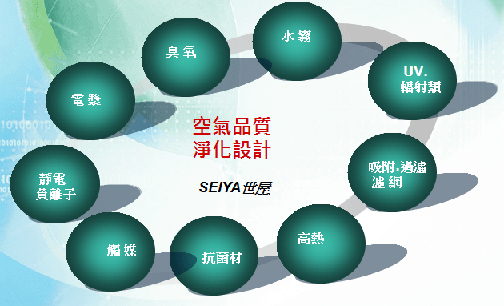

空氣清淨方法
淨化系統有很多，安全不傷人體為第一要件(例如：活氧機/臭氧機不可人活動之處使用)，價格合理、安裝及維修簡易(含清洗)、必需具有初級濾網(循環中將室內灰塵過濾)、具有可認證之技術、設計合理、有實際效果、能源使用少、二次污染低，切記實驗室之數據，具有很多限制性，它不真正代表產品絕對可靠性，以避免被誤導。
依照客戶目前之空調系統提出改善對策，目前處理粉塵只有被動式法，處理TVOC及細菌，有被動式及主動式兩種方法，主動式就是在空間中就可捕捉，比方說以電漿釋放之負離子在空間並不能捕捉灰塵，而是讓它附著在牆面地面上，而細菌部份臭氧則是主動法，但有其使用限制，任何之主動法都一定會傷害人體的，這是必需了解的。
通風管路內容
改善室內空氣品質
| Name | 淨化系統之方法 | |
|---|---|---|
| A.污染源控治 Source Control | 檢視污染源來源，並提出解決之道，此為治本方案，長期而言，其費用是最節省。 | |
| B.空氣流通 Ventilation | 新鮮空氣進並排出室內空氣，使其交換對流，為室內空調最基本之設計。 | |
| C.清淨空氣Air Cleaning | 使用過濾或清潔將其空氣清淨。 | |
空氣清淨方法

| 各類清淨技術說明 | ||
|---|---|---|
| 1. 過濾：依照過濾等級，如灰塵、細菌、病毒..等等，將其阻隔在外部並收集。 | ||
| 2. 吸附：如活性碳、具多孔細材料。 | ||
| 3. 靜電：主要是將細微灰塵讓它黏著在網上或是集塵盒內。 | ||
| 4. 負離子： | ||
| 5. 觸媒： | ||
| 6. 高濕熱： | ||
| 7. 水霧： | ||
| 8. 臭氧： | ||
| 9. 電漿、(等離子)： | ||
| 10. 輻射： | ||
| 11. 紫外線： | ||
| 12. 抗菌材： | ||
| 13. 其他： | ||